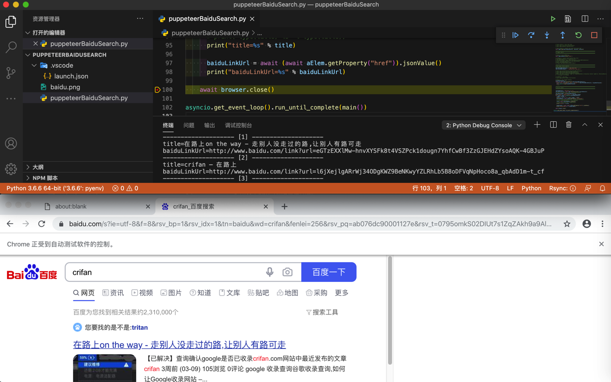
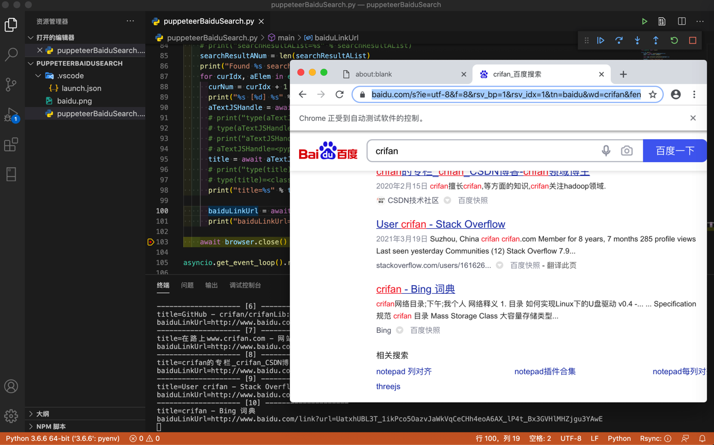

百度搜索自动化
此处给出用puppeteer模拟百度搜索，即百度搜索自动化的完整例子。
代码
- 文件下载：puppeteerDemoBaiduSearch.py
- 贴出代码
# Function: pyppeteer (python version puppeteer) do baidu search
# Author: Crifan Li
# Update: 20210330
import asyncio
from pyppeteer import launch
async def main():
browser = await launch(headless=False)
page = await browser.newPage()
await page.setJavaScriptEnabled(enabled=True)
baiduUrl = "https://www.baidu.com"
await page.goto(baiduUrl)
# await page.screenshot({'path': 'baidu.png'})
################################################################################
# Input text
################################################################################
searchStr = "crifan"
# SearchInputSelector = "input[id=kw]"
SearchInputSelector = "input[id='kw']"
# SearchInputXpath = "//input[@id='kw']"
# searchInputElem = page.xpath(SearchInputXpath)
# # Input method 1: selector + click + keyboard type
# searchInputElem = await page.querySelector(SearchInputSelector)
# print("searchInputElem=%s" % searchInputElem)
# await searchInputElem.click()
# await page.keyboard.type(searchStr)
# Input method 2: focus then type
# await page.focus(SearchInputSelector)
# await page.keyboard.type(searchStr)
# Input method 3: selector and input once using type
await page.type(SearchInputSelector, searchStr, delay=20)
################################################################################
# Trigger search
################################################################################
# Method 1: press ENTER key
await page.keyboard.press('Enter')
# # Method 2: locator search button then click
# SearchButtonSelector = "input[id='su']"
# searchButtonElem = await page.querySelector(SearchButtonSelector)
# print("searchButtonElem=%s" % searchButtonElem)
# await searchButtonElem.click()
# # await searchButtonElem.press("Enter")
################################################################################
# Wait page reload complete
################################################################################
SearchFoundWordsSelector = 'span.nums_text'
SearchFoundWordsXpath = "//span[@class='nums_text']"
# await page.waitForSelector(SearchFoundWordsSelector)
# await page.waitFor(SearchFoundWordsSelector)
# await page.waitForXPath(SearchFoundWordsXpath)
# Note: all above exception: 发生异常: ElementHandleError Evaluation failed: TypeError: MutationObserver is not a constructor
# so change to following
# # Method 1: just wait
# await page.waitFor(2000) # millisecond
# Method 2: wait element showing
SingleWaitSeconds = 1
while not await page.querySelector(SearchFoundWordsSelector):
print("Still not found %s, wait %s seconds" % (SearchFoundWordsSelector, SingleWaitSeconds))
await asyncio.sleep(SingleWaitSeconds)
# pass
################################################################################
# Extract result
################################################################################
resultASelector = "h3[class^='t'] a"
searchResultAList = await page.querySelectorAll(resultASelector)
# print("searchResultAList=%s" % searchResultAList)
searchResultANum = len(searchResultAList)
print("Found %s search result:" % searchResultANum)
for curIdx, aElem in enumerate(searchResultAList):
curNum = curIdx + 1
print("%s [%d] %s" % ("-"*20, curNum, "-"*20))
aTextJSHandle = await aElem.getProperty('textContent')
# print("type(aTextJSHandle)=%s" % type(aTextJSHandle))
# type(aTextJSHandle)=<class 'pyppeteer.execution_context.JSHandle'>
# print("aTextJSHandle=%s" % aTextJSHandle)
# aTextJSHandle=<pyppeteer.execution_context.JSHandle object at 0x10309c9b0>
title = await aTextJSHandle.jsonValue()
# print("type(title)=%s" % type(title))
# type(title)=<class 'str'>
print("title=%s" % title)
baiduLinkUrl = await (await aElem.getProperty("href")).jsonValue()
print("baiduLinkUrl=%s" % baiduLinkUrl)
await browser.close()
asyncio.get_event_loop().run_until_complete(main())
效果
视频
图


输出
Still not found span.nums_text, wait 1 seconds
Found 10 search result:
-------------------- [1] --------------------
title=在路上on the way - 走别人没走过的路,让别人有路可走
baiduLinkUrl=http://www.baidu.com/link?url=eGTzEXXlMw-hnvXYSFk8t4VSZPck1dougn7YhfCwBf3ZzGJEHdZYsoAQK-4GBJuP
-------------------- [2] --------------------
title=crifan – 在路上
baiduLinkUrl=http://www.baidu.com/link?url=l6jXejlgARrWj34ODgKWZ9BeNKwyYZLRhLb5B8oDFVqNpHoco8a_qbAdD1m-t_cf
-------------------- [3] --------------------
title=crifan简介_crifan的专栏-CSDN博客_crifan
baiduLinkUrl=http://www.baidu.com/link?url=IIqPM5wuVE_QP7S357-1bJWGGU1kpFcAZ945BaXUQNpaDzXihf_98wAVi05Gk6-8Qu4aGLv2Rv65WJm6Qr5kk_
-------------------- [4] --------------------
title=crifan的微博_微博
baiduLinkUrl=http://www.baidu.com/link?url=NnqeMlu4Jr_Ld-zoui8pbQO4eRMMO9pLd_DHXagqcdZ46NF4CSuyEziKSTpqCNEi
-------------------- [5] --------------------
title=Crifan的电子书大全 | crifan.github.io
baiduLinkUrl=http://www.baidu.com/link?url=uOZ-AmgNBNr3mGdETezIjTvtedH_ueM6-LNOc2QxbjcNeS8LuVBY-kirwogX7qLl
-------------------- [6] --------------------
title=GitHub - crifan/crifanLib: crifan's library
baiduLinkUrl=http://www.baidu.com/link?url=t42I1rYfn32DGw9C6cw_5lB-z1worKzEuROOtWj-Jyf1l2IBNBcz-l85hSKv9s9T
-------------------- [7] --------------------
title=在路上www.crifan.com - 网站排行榜
baiduLinkUrl=http://www.baidu.com/link?url=WwLwfXA72vK08Obyx2hwqA3-wmq8jAisi4VVSt2R0Ml3ccCy_yxeYfxD2xouAX-i5AyUU1U_2EghwVbJ2p-ipa
-------------------- [8] --------------------
title=crifan的专栏_crifan_CSDN博客-crifan领域博主
baiduLinkUrl=http://www.baidu.com/link?url=Cmcn2mXwiZr87FBGQBq85Np0hgGTP_AK2yLUW6GDeA21r7Q5WvUOUjaKZo5Jhb0f
-------------------- [9] --------------------
title=User crifan - Stack Overflow
baiduLinkUrl=http://www.baidu.com/link?url=yGgsq1z2vNDAAeWY-5VDWbHv7e7zPILHI4GVFPZd6MaFrGjYHsb3Onir1Vi6vvZqD7QAGJrZehIYZpcBfh_Gq_
-------------------- [10] --------------------
title=crifan - Bing 词典
baiduLinkUrl=http://www.baidu.com/link?url=UatxhUBL3T_1ikPco5OazvJaWkVqCeCHh4eoA6AX_lP4t_Bx3GVHlMHZjgu3YAwE